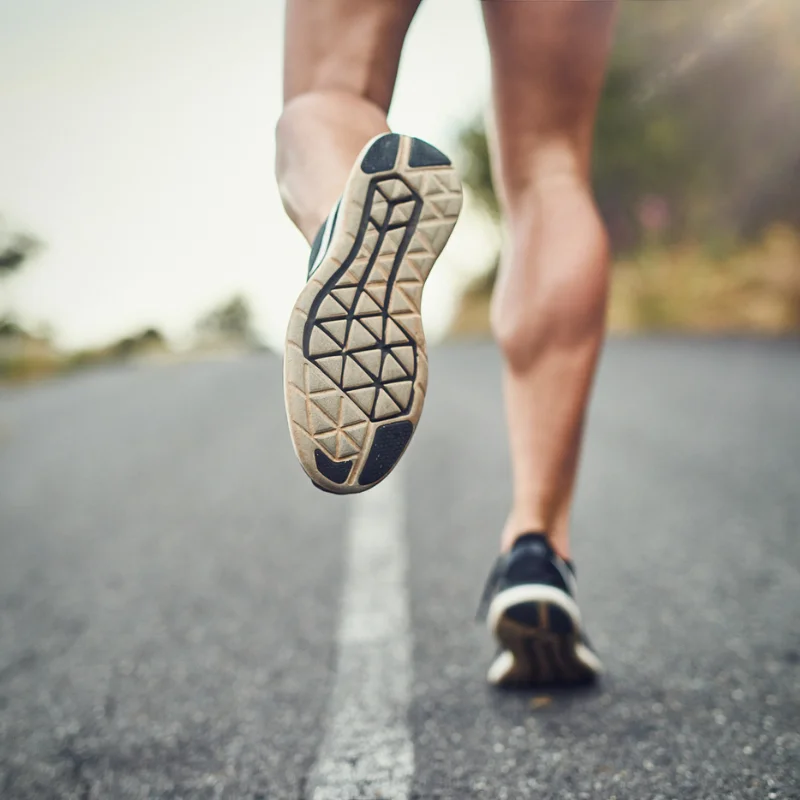
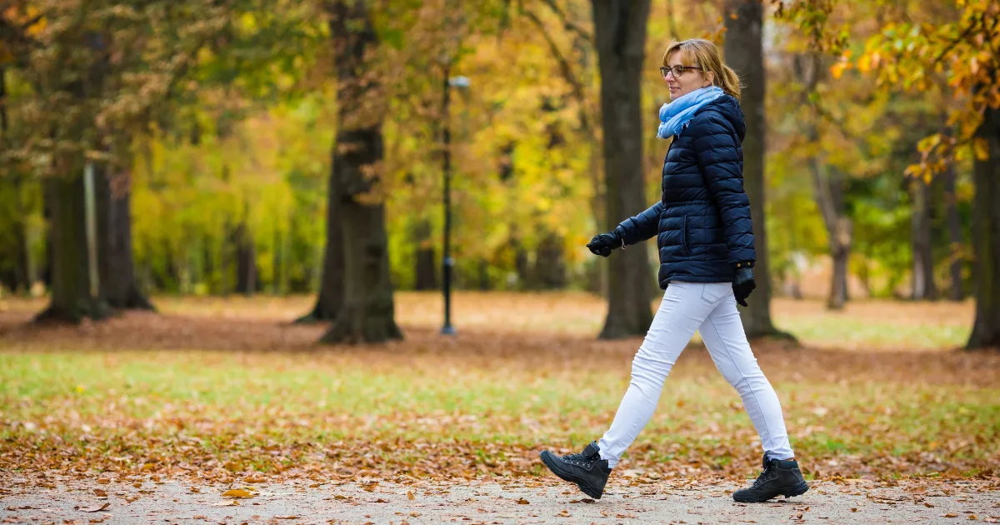
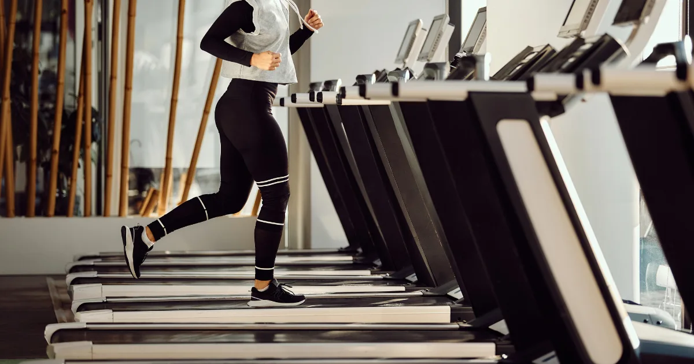

Hubnutí chůzí: kolik kroků denně potřebujete?
Chůze je nejpřirozenější pohyb, který existuje. Nepotřebujete k ní žádné vybavení, permanentku do fitka ani speciální oblečení. Stačí vyjít za dveře. A přesto patří chůze mezi nejúčinnější způsoby, jak nastartovat hubnutí a postupně snížit svou hmotnost – ať už máte 20, nebo 60 let. Pokud hledáte šetrný, udržitelný a příjemný způsob, jak se dostat do formy, jste na správném místě.
V tomto článku se podíváme na to, kolik kroků denně je potřeba k hubnutí, jak funguje rychlá chůze, proč chůze pomáhá i na hubnutí břicha a jestli má smysl chodit na běžeckém páse. Všechno prakticky a bez zbytečných komplikací.

Proč chůze funguje na hubnutí
Chůze je aerobní aktivita střední intenzity, při které tělo čerpá energii převážně z tuků. Na rozdíl od intenzivního cvičení nezpůsobuje přílišný stres pro organismus, nezvyšuje nadměrně chuť k jídlu a nebolí po ní klouby. Díky tomu ji zvládne opravdu každý a lze ji zařadit do každodenní rutiny bez velkého úsilí.
Při chůzi spalujete přibližně 250–350 kcal za hodinu v závislosti na rychlosti, hmotnosti a terénu. Pokud chodíte pravidelně, vytváříte si konzistentní kalorický deficit, který vede k postupnému úbytku hmotnosti. A co je důležité – chůze je aktivita, u které většina lidí vydrží dlouhodobě, na rozdíl od extrémních diet nebo náročných tréninků.
Hlavní výhody hubnutí chůzí
- Nulové náklady – nepotřebujete žádné vybavení ani členství
- Šetrnost ke kloubům – minimální nárazové zatížení
- Snížení stresu – chůze na čerstvém vzduchu zlepšuje náladu a snižuje kortizol
- Jednoduchost – dá se zabudovat do běžného dne (cesta do práce, procházka po obědě)
- Vhodnost pro začátečníky – ideální vstup do pohybového režimu
Kolik kroků denně na hubnutí?
Často se uvádí magická hranice 10 000 kroků denně. Toto číslo pochází z japonské marketingové kampaně z 60. let a nemá přímý vědecký základ. Přesto je dobrou orientační hodnotou. Studie ukazují, že zvýšení denního počtu kroků nad 7 500 výrazně snižuje riziko chronických onemocnění a pomáhá s hubnutím.
| Denní kroky | Úroveň aktivity | Účinek na hubnutí |
|---|---|---|
| Méně než 5 000 | Sedavý životní styl | Žádný výrazný efekt |
| 5 000 – 7 500 | Mírně aktivní | Udržení hmotnosti |
| 7 500 – 10 000 | Aktivní | Postupné hubnutí |
| 10 000 – 12 500 | Velmi aktivní | Výrazné hubnutí |
| Nad 12 500 | Extrémně aktivní | Rychlé výsledky |
Prakticky vzato: pokud aktuálně uděláte 4 000 kroků denně, přidejte nejprve 2 000 kroků a postupně navyšujte. Nesnažte se skočit na 10 000 hned od prvního dne – důslednost je důležitější než jednorázový výkon.
Tip: Spočítejte si své BMI a sledujte, jak se postupně mění s přibývajícími kroky.

Rychlá chůze a hubnutí
Rychlost chůze má na spalování kalorií výrazný vliv. Zatímco pomalá procházka (3–4 km/h) spálí kolem 200 kcal za hodinu, rychlá chůze (5,5–6,5 km/h) dokáže spálit 300–450 kcal za hodinu. Navíc rychlá chůze lépe posiluje kardiovaskulární systém a zrychluje metabolismus.
Jak poznat, že chodíte dostatečně rychle?
- Mírně se zadýcháte, ale stále dokážete mluvit v krátkých větách
- Cítíte, že se vaše srdce zrychlilo
- Tempo odpovídá zhruba 100–120 kroků za minutu
Rychlá chůze je skvělou alternativou k běhu – je stejně účinná na spalování tuků, ale bez nárazového zatížení kloubů. Pokud vás zajímá, jaká tepová frekvence je při chůzi ideální pro spalování tuků, přečtěte si náš článek o tepové frekvenci pro spalování tuků.
Pomáhá chůze na hubnutí břicha?
Krátká odpověď: ano, ale ne přímo. Žádný pohyb nedokáže cíleně spalovat tuk jen na břiše – to je bohužel mýtus. Co ale chůze dokáže, je snižovat celkový podíl tělesného tuku, včetně toho viscerálního (uloženého kolem orgánů v oblasti břicha). A právě viscerální tuk je z hlediska zdraví nejnebezpečnější.
Studie publikovaná v Journal of Exercise Nutrition & Biochemistry ukázala, že ženy, které chodily 50–70 minut 3× týdně po dobu 12 týdnů, výrazně snížily obvod pasu i množství viscerálního tuku. Podobné výsledky přinesly i další výzkumy – pravidelná chůze pomáhá zmenšovat břicho, zejména v kombinaci s mírným kalorickým deficitem.
Tipy pro maximální efekt na břicho
- Zapojte při chůzi břišní svaly – vědomě zatahujte pupek směrem k páteři
- Střídejte tempo – 2 minuty rychle, 1 minuta pomaleji (intervalová chůze)
- Choďte do kopce nebo zvyšte sklon na páse
- Kombinujte chůzi s úpravou stravy

Chůze na páse a hubnutí
Nemáte čas chodit ven? Prší? Nechce se vám v zimě do mrazu? Běžecký pás je výborná alternativa. Chůze na páse má stejný spalovací efekt jako chůze venku, navíc si můžete přesně nastavit rychlost a sklon.
Výhody chůze na běžeckém páse
- Kontrola rychlosti – nemůžete podvědomě zpomalit
- Nastavení sklonu – sklon 5–10 % výrazně zvyšuje spalování
- Nezávislost na počasí – cvičíte kdykoliv
- Sledování výkonu – přesné údaje o kaloriích, vzdálenosti a tepové frekvenci
Osvědčený trénink na páse pro hubnutí
- Rozehřátí (5 min) – rychlost 4 km/h, sklon 0 %
- Hlavní část (25–35 min) – rychlost 5,5–6 km/h, sklon 3–5 %
- Intenzivní úseky – každých 5 minut zvyšte sklon na 8–10 % na 2 minuty
- Zklidnění (5 min) – rychlost 3,5 km/h, sklon 0 %
Tento trénink spálí přibližně 300–400 kcal a zabere necelých 40 minut.
Týdenní plán hubnutí chůzí
Pokud s chůzí teprve začínáte, zde je jednoduchý 4týdenní plán, který vás postupně dostane na úroveň, kde budete vidět výsledky.
| Týden | Denní cíl | Doba chůze | Intenzita |
|---|---|---|---|
| 1. týden | 6 000 kroků | 30 min | Pohodlné tempo |
| 2. týden | 8 000 kroků | 40 min | Svižné tempo |
| 3. týden | 10 000 kroků | 50 min | Rychlá chůze |
| 4. týden | 10 000+ kroků | 50–60 min | Intervalová chůze |
Další tipy, jak zvýšit počet kroků
- Vystupte z MHD o zastávku dříve
- Místo výtahu používejte schody
- Po obědě si udělejte 15minutovou procházku
- Telefonujte vestoje a za chůze
- O víkendu si naplánujte delší výlet do přírody
Hubnutí chůzí funguje nejlépe v kombinaci s rozumnou stravou. Pokud si chcete hlídat kalorický příjem, podívejte se na náš článek o počítání kalorií při hubnutí. A jestli hledáte i další sporty, které vám pomohou zhubnout, mrkněte na přehled nejlepších sportů na hubnutí.
Na co nezapomeňte
Chůze je jednoduchá, ale účinná. Pokud ji zařadíte do svého každodenního života a budete důslední, výsledky se dostaví. Připomeňme si nejdůležitější body:
- Začněte tam, kde jste – i 2 000 kroků navíc dělá rozdíl
- Postupně zvyšujte na 8 000–10 000 kroků denně
- Rychlá chůze spaluje výrazně více než pomalá procházka
- Chůze na páse je plnohodnotná alternativa
- Pro hubnutí břicha kombinujte chůzi s kalorickým deficitem
- Důslednost porazí intenzitu – choďte každý den, ne jednou za týden 3 hodiny
Chcete vědět, kde právě stojíte? Spočítejte si své BMI a sledujte svůj pokrok v čase.